Комп'ютер, попри свої надзвичайні можливості, розуміє лише одну мову — мову електричних сигналів. Тож як створити програму, яка буде зрозумілою і людині, і комп'ютеру?
Незважаючи на різницю у зовнішньому вигляді та способах використання, будь-який сучасний пристрій — від мікрохвильовки та пральної машини до марсохода — працює за програмою. Комп'ютер теж є електронно-обчислювальною машиною, яка працює за наданою їй програмою.
Алгоритми завжди розраховані на виконання певним виконавцем. Одними з таких виконавців є комп'ютери, за допомогою яких можна здійснювати різноманітні завдання — виконувати математичні обчислення, працювати з текстами, відтворювати музику та відео, керувати різними пристроями та машинами. Однак комп'ютер завжди працює за певним алгоритмом, створеним для нього людиною. Надалі ми будемо розробляти алгоритми для комп'ютера, які мають бути описані мовою, зрозумілою комп'ютеру, тобто мовою програмування, а результатом запису алгоритму мовою програмування є програма.
Програма — запис алгоритму та даних для нього у спосіб, призначений для подальшого автоматичного виконання комп'ютером.
Алгоритми, на основі яких розроблялися програми для обчислювальних машин, спочатку записувалися словами звичайної мови, зрозумілими майже кожному, або у вигляді блок-схем.
На жаль, алгоритми у такому «гарному» записі абсолютно незрозумілі комп'ютеру — людина і комп'ютер «розмовляють» різними «мовами». Єдина мова, яку «розуміють» комп'ютери — це мова електричних сигналів, тобто наявність або відсутність електричної напруги в окремих комірках пам'яті комп'ютера. Якщо електричний сигнал у комірці є — це 1, якщо його немає — 0. Це достатньо «прості» (для комп'ютера) команди, які визначають, звідки беруться дані, які операції з ними виконуються (додавання, віднімання, множення, порівняння) і куди результат пересилається або записується.
Перші комп'ютери, такі як ENIAC, мали тисячі перемикачів та з'єднувальних дротів, які використовувались для програмування їхньої роботи. Для виконання однієї програми перші комп'ютери могли «програмувати» кілька діб, тож невдовзі для програмування почали використовувати перфокарти — картки з отворами, які замикали контакти зчитувального пристрою обчислювальної машини, що отримувала потрібні їй «електричні» нулі та одиниці.
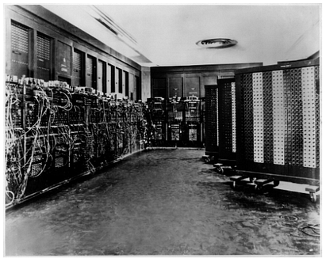
Використання перфокарт значно спростило роботу з електронно-обчислювальними машинами, адже перфокарти можна було готувати навіть далеко від самого комп'ютера. Разом з тим обсяги програм і даних, які вони опрацьовували, зростали майже щоденно — комп'ютери почали використовуватися не тільки для військових і наукових обчислень, а й у банківських, фінансових установах та на виробництві.
Кількість перфокарт, потрібних для зберігання даних і програм, теж збільшувалась: для збереження 4,5 мегабайт даних у 1955 році потрібно було використати 62 500 перфокарт. Щоб зрозуміти, багато це чи мало — інформаційний обсяг сучасного підручника з інформатики становить близько 9 мегабайт, тож уявіть, скільки перфокарт знадобилося б для його збереження :)
Згодом перфокарти замінили компактніші й швидші носії — перфострічки, а потім магнітні стрічки та диски. А оскільки комп'ютери під час своєї роботи зберігають дані у внутрішній («оперативній») пам'яті, виявилося доречним зберігати в пам'яті не тільки дані, а й самі програми — це значно пришвидшило роботу комп'ютерів і заклало основу для архітектури сучасних обчислювальних машин.
Існує багато способів запису алгоритмів, і одним з них є словесний опис — ми словами вказуємо порядок виконання дій тому, хто буде виконувати наші інструкції. Так само, як для спілкування з людиною нам потрібна певна мова, так і для «спілкування» з комп'ютером програмістам потрібна мова, яка називається мовою програмування.
Мова програмування — це набір інструкцій та правил їх запису і використання, які застосовують програмісти для створення комп'ютерних програм.
Програмування — процес створення комп'ютерної програми.
Мови програмування залежно від рівня «зрозумілості» людині поділяються на дві категорії — низького та високого рівня. Мова програмування низького рівня «зрозуміла» комп'ютеру, але для людини це, зазвичай, важкий для читання код. І навпаки — мова програмування високого рівня досить зручна й зрозуміла для людини-програміста, але комп'ютер не може виконати її безпосередньо, без перетворення на машинний код.
Машинні коди — це безпосередньо та «машинна мова», вказівки якою комп'ютер «розуміє» і може виконати. У пам'яті комп'ютера програма і сьогодні є лише набором нулів та одиниць.
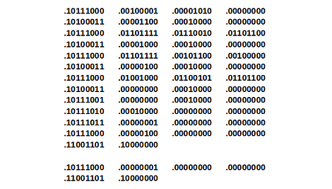
Для пересічної людини програма в машинних кодах не більш зрозуміла, ніж мова прибульців з далекої планети. І варто зауважити, скільки помилок можна зробити, вводячи безкінечні послідовності нулів та одиниць? А помилки в програмах можуть бути дуже критичними — наприклад, помилка у програмі ракети-носія Ariane 5, яка у 1996 році мала вивести на орбіту кілька супутників, призвела до вибуху ракети в повітрі. З урахуванням встановленого на борту обладнання аварія коштувала 500 млн доларів, а будівництво та розробка самої ракети — 7 млрд доларів.
Програмування в машинних кодах є складним, виснажливим і небезпечним щодо помилок процесом, тож виникла ідея представити машинні коди у вигляді слів (або їх скорочень), зрозуміліших програмістам. Так з'явилися мови програмування низького рівня, які отримали загальну назву Асемблер.
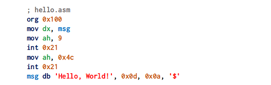
Програма, записана асемблером, досить просто й швидко перетворюється на машинні коди, які може виконати комп'ютер. Асемблери є машинно-залежними мовами — для кожного типу процесора потрібно розробляти свій власний асемблер, і програма, яка працювала на одному комп'ютері, могла не працювати на іншому. Сьогодні асемблери застосовують системні програмісти для отримання програм у машинних кодах, для яких важливі компактність, швидкодія та безпосередній доступ до обладнання.Існує декілька тисяч різноманітних мов програмування, але не варто перейматися такою великою кількістю — широко вживаних мов програмування налічується близько десятка, з яких професійні програмісти зазвичай використовують не більше двох-трьох.
Однією з перших мов програмування високого рівня був FORTRAN (Фортран), який використовувався для розрахунків на великих ЕОМ (електронно-обчислювальних машинах).
BASIC (Beginners All-purpose Symbolic Instruction Code — багатоцільова мова символьних інструкцій для початківців, Бейсик) був розроблений для використання людьми, недосвідченими у програмуванні, і спочатку застосовувався для навчальних цілей.
Мова програмування С (Сі) спочатку була розроблена для створення операційних систем, оскільки дозволяла створювати програми з компактним кодом і можливістю доступу до апаратних засобів ЕОМ.
Pascal був однією з найпопулярніших мов програмування, особливо для навчання. Розроблений у 1970 році швейцарським фахівцем в галузі обчислювальної техніки, професором Н. Віртом. Мову названо на честь французького вченого Блеза Паскаля.
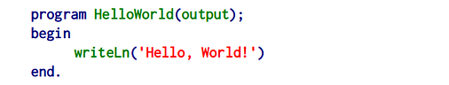
До найсучасніших і найпопулярніших мов програмування високого рівня належать C++, Java, JavaScript та Python.C++ була розроблена Б'ярном Страуструпом у 1980 році. Вона схожа на мову С, але має додаткові можливості.
Java — мова програмування високого рівня, розроблена у 1995 році. Вона використовується для розробки програмного забезпечення для банків, торгівлі, інформаційних технологій, Android, опрацювання великих даних, вебзастосунків і комп'ютерних програм.
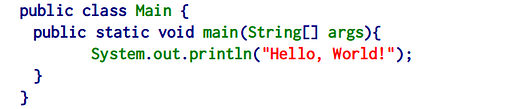
JavaScript — мова програмування, яку створили для автоматизації дій на вебсторінках. За її допомогою програмісти створюють динамічні вебсайти, сервери, мобільні програми, анімаційну графіку, ігри тощо.Python — одна з найпоширеніших мов програмування. Це проста у вивченні мова, яку використовують у машинному навчанні, штучному інтелекті, опрацюванні великих даних, розробці комп'ютерних програм і робототехніці. Саме цю мову ми вивчатимемо в цьому курсі.
Часто виникає запитання — навіщо потрібні нові мови, якщо є багато вже наявних? Зазвичай нові мови програмування створюють для вирішення певних завдань — коли можливостей наявних мов не вистачає, або наявну мову стало незручно використовувати.
Було б дивно, якби кожну програму створювали безпосередньо в машинних кодах — це надто складний і трудомісткий процес, тож завдання перекладу програм, написаних мовами високого рівня (зрозумілими людині), у програму в машинних кодах (зрозумілу комп'ютеру), поклали на саму обчислювальну машину, створивши для цього спеціальні програми.
Такі програми називаються трансляторами, і за способом роботи вони поділяються на інтерпретатори та компілятори.
Транслятор (англ. translator — перекладач) — програма-перекладач, яка перетворює текст програми, написаний однією з мов високого рівня, на програму, що складається з машинних команд.
Інтерпретатор (англ. interpreter — тлумач, усний перекладач) «перекладає» вхідну програму поступово, рядок за рядком, негайно виконуючи кожну вказівку мови програмування.
Компілятор (англ. compiler — укладач, збирач) повністю «перекладає» програму на машинний код, який можна негайно виконати або зберегти у файлі для подальшого виконання.
Перетворення програми на машинний код (компіляція) може бути досить тривалим процесом для великих програм, але створений унаслідок цього код виконується дуже швидко, тож компіляцію застосовують для програм, для яких важлива швидкодія — операційних систем і драйверів (керуючих програм) різних пристроїв.
Після того, як програма відкомпільована, ні вихідний код, ні компілятор більше не потрібні для її виконання. Натомість програма, яку обробляє інтерпретатор, повинна заново перекладатися машинною мовою під час кожного запуску.
Відкомпільовані програми працюють швидше, але інтерпретовані програми простіше виправляти й змінювати. Під час інтерпретації швидкодія програми значно менша, але користувач отримує результат виконання негайно, без додаткових етапів компіляції. Кожна мова програмування зазвичай орієнтована або на компіляцію, або на інтерпретацію — залежно від того, для яких цілей вона створювалася. Наприклад, C++ зазвичай використовують для вирішення складних завдань, у яких важлива швидкість роботи програм, тому цю мову зазвичай реалізують за допомогою компілятора. З іншого боку, Python створювався як мова, для якої негайне виконання програми має незаперечні переваги, тому Python — це переважно інтерпретована мова.
Коротко узагальнимо відмінності між мовами програмування високого та низького рівнів:
Мову програмування Python було створено у 1989 році Гвідо ван Россумом. Назва Python походить від назви телевізійного серіалу «Monty Python's Flying Circus», шанувальником якого є Г. ван Россум. Перша публічна версія цієї мови була опублікована у 1991 році.
Сьогодні використовується Python версії 3 — саме на ній базується цей курс. Версія 2 Python є застарілою, її розробку офіційно завершено, і використовувати її не варто.
Python Software Foundation¹ — це асоціація, яка організовує розробку Python та підтримує спільноту розробників і користувачів.
Ця мова програмування має багато цікавих характеристик:
Усі ці характеристики роблять Python мовою, яку нині викладають у багатьох навчальних закладах, від шкіл до закладів вищої освіти.
Створення комп'ютерних програм є досить складним і трудомістким процесом, але існують програмні засоби, які значно полегшують роботу програміста.
Будь-яка комп'ютеризована інформаційна система складається з апаратного та програмного забезпечення. Апаратне забезпечення — це процесор, внутрішня та зовнішня пам'ять, пристрої введення та виведення даних та інші компоненти, які забезпечують роботу комп'ютера. Програмне забезпечення — сукупність програм, які працюють (або можуть працювати) на певному комп'ютері та призначені для виконання певних завдань.
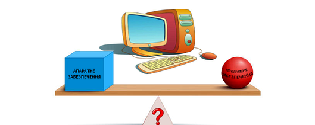
Що важливіше — апаратне чи програмне забезпечення? На перший погляд важливішою є апаратна складова («залізо», hardware), адже для виготовлення електронних компонентів сучасного комп'ютера потрібно будувати заводи й фабрики, добувати метали, виробляти пластмаси, залучати тисячі робітників. Разом з тим варто пам'ятати, що жоден комп'ютер без програмного забезпечення є лише купою залізяччя й пластмаси, тож програмне забезпечення (software) може коштувати значно дорожче, ніж комп'ютер, на якому воно працює, адже програми працюють з інформацією, яка може приносити її власнику мільярдні прибутки.
Програми створюють люди, яких ми називаємо «програмістами».
Програміст — фахівець, який створює програмне забезпечення для комп'ютерів та інших програмованих електронних пристроїв.>
Кожна програма має певне призначення, яке є вирішенням відповідної проблеми. Наприклад, програма-калькулятор призначена, щоб полегшити виконання обчислень, відеопрогравач — для відтворення відеофайлів, графічний редактор — для малювання, вебпереглядач (браузер) — для перегляду вебсторінок, ігри — для розваг або навчання в ігровій формі.
Програма — це завдання для комп'ютера, подане у формі, зрозумілій комп'ютеру, тобто програма реалізує певний алгоритм. Отже, перш ніж писати програму, програміст має розробити алгоритм її роботи. Для простих програм алгоритм теж простий і фактично описується умовою задачі, яку має виконати програма — «Знайти суму двох чисел», «Намалювати прямокутник і коло», «Перемістити зображення мурахи на 8 одиниць праворуч» тощо. Для складних програм потрібні складні алгоритми, до розробки яких можуть залучатися багато фахівців.
Після розробки алгоритму настає час записати його мовою програмування, тобто написати програму. Може здатися дивним, але програми пишуться так само, як пишуться різні тексти — програміст створює програму як набір текстових вказівок.
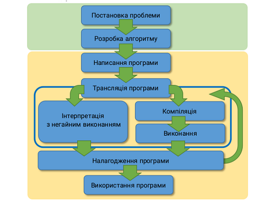
За допомогою чого ми записуємо тексти, використовуючи комп'ютер? За допомогою текстового редактора. Оскільки програма, записана мовою програмування високого рівня, є текстовим файлом, код програми (набір інструкцій у текстовому вигляді) записується за допомогою звичайного текстового редактора. Професійні програмісти використовують спеціалізовані текстові редактори, які «підсвічують» різними кольорами інструкції та дані програми, вставляють складні програмні конструкції та підказують щодо вживання тієї чи іншої інструкції мови програмування.
Після того, як код програми написано, його потрібно зробити зрозумілим комп'ютеру — для цього використовують програму-транслятор, яка або негайно виконує код (інтерпретатор), або компілює програму в машинний код (компілятор).
Програму створено, запущено на виконання — і вона може запрацювати відразу, а може й не виконатись, повідомивши про помилки в коді або некоректні дані. Під час створення програми можуть бути неправильно записані назви інструкцій, помилково складені вирази та інші недоречності, тож після написання програми та спроби її виконання часто виникає потреба знайти й виправити помилки — для цього використовують програму-налагоджувач (debugger). Після знаходження та виправлення помилок програма знову запускається на виконання, і за появи нових помилок процес повторюється.
Отже, для створення програм потрібні: текстовий редактор, програма-транслятор (компілятор або інтерпретатор) і налагоджувач. І роботу з кожною з них потрібно вивчати окремо? Майже так, але сьогодні існують спеціалізовані програми, що поєднують можливості всіх названих інструментів — середовища розробки програм (середовища програмування).
Середовище програмування (середовище розробки, інтегроване середовище розробки, ІDE) — комплекс програм, призначених для створення тексту програми (коду), його трансляції в машинний код або виконання коду програми інтерпретатором, а також для налагодження програм.
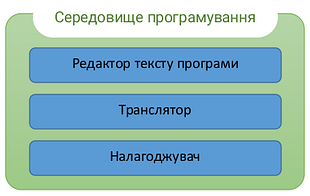
Інтегроване середовище програмування містить усе необхідне для розробки програм:Для створення програм мовою Python розроблено дуже багато різноманітних середовищ програмування — від простих, які схожі на звичайний текстовий редактор, до потужних професійних інструментів, здатних задовольнити потреби будь-якого програміста.
Для практики програмування на Python бажано, щоб Python був встановлений на вашому комп'ютері. Хороша новина полягає в тому, що ви можете безкоштовно встановити Python 3 на свій комп'ютер, будь то Windows, Mac OS X або Linux.
Найпростіший спосіб встановити Python — завантажити офіційний інсталятор із сайту python.org. Сайт автоматично пропонує актуальну версію для вашої операційної системи. Під час встановлення у Windows обов'язково позначте пункт «Add Python to PATH» — це дозволить викликати Python з командного рядка.
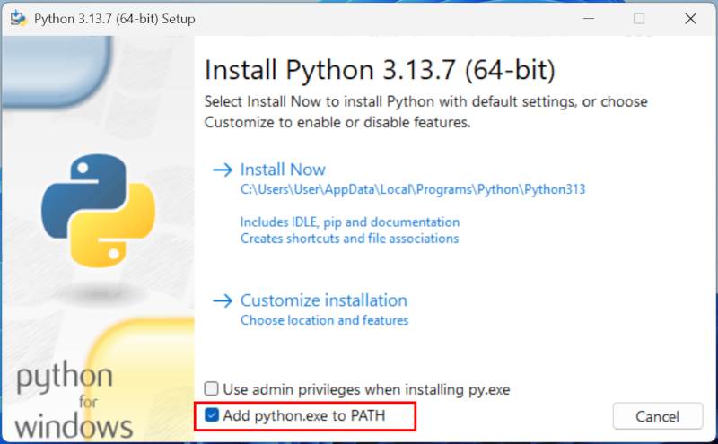
Після встановлення інтерпретатор Python, а також базовий менеджер пакетів pip (для встановлення додаткових модулів), вже будуть доступні.
Ви можете встановити середовище програмування Thonny - воно містить Python, тож його не потрібно буде завантажувати окремо.
Вивчення такої мови програмування, як Python, вимагатиме написання рядків коду за допомогою текстового редактора. Якщо ви початківець, радимо використовувати Visual Studio Code — безкоштовний, багатоплатформний редактор із зручною підтримкою Python. Також підійдуть Sublime Text, PyCharm (у безкоштовній версії Community), emacs, vim, geany тощо.
Для довідки нагадуємо, що програмне забезпечення Microsoft Word, WordPad та LibreOffice Writer не є текстовими редакторами — це текстові процесори, які не можна і не слід використовувати для написання комп'ютерного коду.
Такий шлях — встановлення Python окремо та вибір текстового редактора на власний смак — підходить тим, хто хоче з самого початку працювати так, як працюють професійні розробники. Але для перших кроків у програмуванні цілком достатньо скористатися одним з готових середовищ програмування, які описані нижче.
Найпростішим середовищем для створення та виконання програм є програмний застосунок Python IDLE, який постачається разом з більшістю інсталяцій мови програмування Python. На вигляд він схожий на звичайний текстовий редактор, але має всі можливості повноцінного середовища програмування.
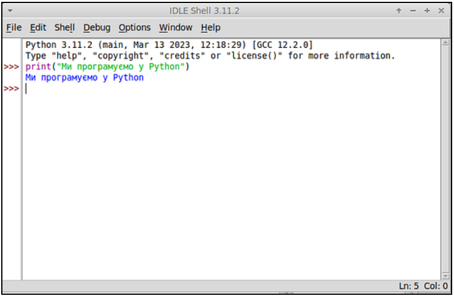
Для вивчення програмування та створення невеликих програм варто використовувати програмні засоби, спеціально призначені для цього. Таким є середовище програмування Thonny. Порівняно з IDLE, Thonny має краще організований інтерфейс, багатовіконне подання та Асистент, який інформує про наявні помилки й можливі способи їх усунення. Безперечною перевагою Thonny є наявність інтерфейсу українською мовою.
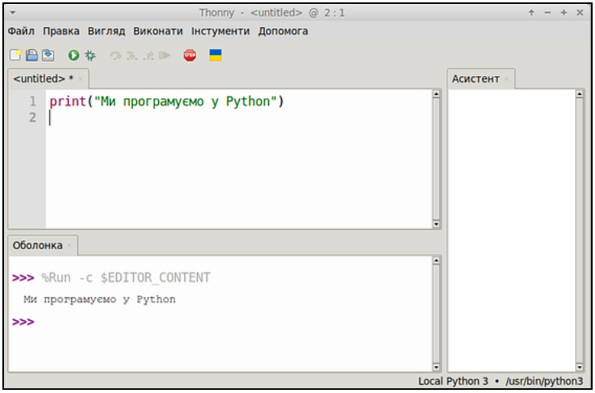
IDLE та Thonny — застосунки, призначені для встановлення на жорсткий диск комп'ютера, вони не можуть працювати онлайн, тобто через мережу Інтернет. Для онлайн-розробки програм мовою Python існує велика кількість різноманітних засобів — ReplIt, OnlineGDB, Trinket, OneCompiler, IDEOne та інші, але в цьому курсі ми будемо використовувати ЄPython.
ЄPython — навчальне середовище для вивчення мови програмування Python. Застосунок працює як онлайн, так і локально, навіть без доступу до Інтернету — можна працювати як на стаціонарних та портативних комп'ютерах(ноутбуках), так і на планшетах або смартфонах.
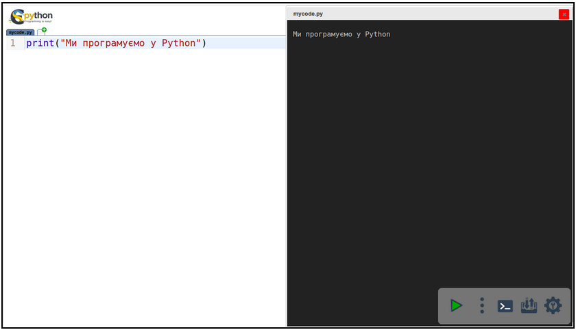
Потрапити до середовища ЄPython можна одним із таких способів:
Далі в цьому курсі всі приклади й вправи можна виконувати як у ЄPython, так і в будь-якому іншому середовищі, що підтримує Python 3 (Thonny, IDLE, PyCharm, Visual Studio Code тощо).
Як і будь-яке інше навчання, вивчення програмування на Python вимагає часу та практики. Програмування — це навичка, яка формується через регулярні вправи, а не через одне лише читання теорії.
Python — це комп'ютерна програма, яка за визначенням не втомлюється, є терплячою та завжди доступною. Тому не вагайтеся практикувати, практикувати і практикувати ще: пишіть код щодня, навіть невеликими шматочками, і не бійтеся помилок — вони є звичайною частиною процесу навчання.
У цій книзі команди, інструкції Python, результати та вміст файлів позначені моноширинним шрифтом для поодиноких елементів або у такому вигляді на кількох рядках — для найдовших елементів. Для останніх номер зліва вказує номер рядка і використовується для посилання на конкретну інструкцію. Цей номер наведено лише в інформаційних цілях.
Крім того, у випадку програм, вмісту файлів або результатів, які занадто довгі, щоб бути включеними повністю, позначення [...] вказує на довільне скорочення кількох символів або рядків.
Оболонка (shell) — це інтерактивний інтерпретатор команд, який дозволяє взаємодіяти з комп'ютером. Ми будемо використовувати оболонку для запуску інтерпретатора Python (це стосується випадку, коли Python встановлено безпосередньо на комп'ютері, якщо ви працюєте у ЄPython, цей крок можна пропустити). Запуск оболонки (shell або командного рядка) залежить від вашої операційної системи. Ось найшвидші способи відкрити термінал на кожній із платформ:
У Windows є кілька варіантів оболонки: сучасний PowerShell, класичний Командний рядок (CMD) та сучасний Windows Terminal (який об'єднує обидва).
Найшвидший спосіб (Універсальний): Натисніть комбінацію клавіш Win + R, введіть powershell (або cmd) і натисніть Enter.
Через меню «Пуск»: Натисніть клавішу Win (або клікніть на Пуск), почніть вводити Terminal або PowerShell і виберіть відповідну програму.
У більшості дистрибутивів Linux (Ubuntu, Fedora, Mint тощо) за замовчуванням використовується оболонка Bash, запущена у графічному емуляторі терміналу.
Гарячі клавіші (Працює майже всюди): Натисніть одночасно Ctrl + Alt + T. Це миттєво відкриє нове вікно терміналу.
Через меню програм: Відкрийте меню додатків (клавіша Super / Win), введіть у пошуку Terminal і запустіть його.
Сучасні версії macOS використовують оболонку Zsh (у старіших версіях використовувався Bash) через стандартний додаток «Термінал».
Найшвидший спосіб (через Spotlight): Натисніть Cmd + Space (Пробіл), щоб відкрити пошук, введіть Terminal і натисніть Enter.
Через Finder: Відкрийте Finder, перейдіть у папку Програми (Applications) -> папка Утиліти (Utilities) і двічі клікніть на Термінал (Terminal).
Оболонка завжди має запрошення командного рядка, тобто повідомлення, яке показується перед місцем, де вводяться команди. Надалі це запрошення позначається символом грошової одиниці(долара) $, незалежно від операційної системи.
Наприклад, якщо вас просять виконати таку інструкцію:
$ python
вам потрібно буде ввести лише python, без символу $ та пробілу після нього.
Python — це сучасна, популярна мова програмування високого рівня. Завдяки простому та зрозумілому синтаксису, який нагадує звичайну англійську мову, вона є ідеальною як для першого знайомства з програмуванням, так і для професійної розробки.
Працювати з Python можна двома різними способами: у режимі виконання окремих команд (інтерактивному) та в режимі виконання програм (пакетному).
Комп'ютер не вміє думати самостійно — він лише чітко виконує вказівки людини.
Команда — це інструкція, записана мовою програмування, яка вказує комп'ютеру виконати певну дію.
Python є інтерпретованою мовою програмування. Це означає, що спеціальна програма-перекладач (інтерпретатор Python) бере написану нами команду, миттєво перекладає її з мови Python на мову одиниць та нулів (машинний код, зрозумілий процесору) і одразу віддає комп'ютеру на виконання. Переклад і виконання відбуваються рядок за рядком, зверху вниз.
Це спеціальний режим роботи інтерпретатора Python, який працює за принципом "запит — відповідь". Ви пишете одну команду, натискаєте клавішу Enter, і Python миттєво повертає результат на екран, очікуючи на наступне введення. Ознакою того, що оболонка готова до роботи, є рядок запрошення, який зазвичай виглядає як три кутові дужки: >>>.
Коли зручно використовувати цей режим? Інтерактивний режим є незамінним у таких випадках:
Ось як виглядає взаємодія з комп'ютером в інтерактивному режимі для Python, встановленого на комп'ютері:
Відкрийте Термінал та виконайте команду:
python
Ця команда запустить інтерпретатор Python. Ви повинні отримати щось подібне для Windows:
PS C:\Users\user> python
Python 3.12.2 (main, Feb 27 2024, 17:28:07) [MSC v.1916 64 bit (AMD64)] on win32
Type "help", "copyright", "credits" or "license" for more information.
>>>
для Mac OS X:
imac:~$ python3
Python 3.12.2 (main, Feb 27 2024, 12:57:28) [Clang 14.0.6] on darwin
Type "help", "copyright", "credits" or "license" for more information.
>>>
або для Linux:
user@machine:~$ python3
Python 3.12.2 (main, Feb 16 2024, 20:50:58) [GCC 12.3.0] on linux
Type "help", "copyright", "credits" or "license" for more information.
>>>
Повідомлення подібні до PS C:\Users\user> для Windows, imac:~$ для Mac OS X та user@machine:~$ для Linux є запрошенням командного рядка вашого Терміналу. Надалі це запрошення буде позначатися просто символом $, незалежно від того, чи ви використовуєте Windows, Mac OS X або Linux.
Потрійна стрілка >>> — це запрошення командного рядка (prompt) інтерпретатора Python. Тут Python очікує команду, яку ви повинні ввести з клавіатури. Введіть, наприклад, інструкцію:
print("Привіт, світ!")
потім підтвердьте цю команду, натиснувши клавішу Enter.
Python безпосередньо виконав команду і показав Привіт, світ!. Потім він очікує нову інструкцію, показуючи запрошення інтерпретатора Python (>>>). Підсумовуючи, ось що повинно з'явитися на вашому екрані:
>>> print("Привіт, світ!")
Привіт, світ!
>>>
Ви можете спробувати ще раз, використовуючи цього разу інтерпретатор як калькулятор:
>>> 1 + 1
2
>>> 6 * 3
18
На цьому етапі ви можете ввести іншу команду або вийти з інтерпретатора Python, ввівши команду exit() і підтвердивши натисканням клавіші Enter, або одночасно натиснувши клавіші Ctrl і D у Linux та Mac OS X, або Ctrl і Z, а потім Enter у Windows.
Отже інтерпретатор працює за такою моделлю:
>>> інструкція python
результат
де потрійна стрілка відповідає введенню (input), яке користувач набирає на клавіатурі, а відсутність стрілки на початку рядка відповідає виводу (output), згенерованому Python.
Проте є виняток: коли є довгий рядок коду, його можна розділити на дві частини за допомогою символу \ (зворотний слеш) з міркувань читабельності:
>>> Ось довгий рядок коду \
... описаний на двох рядках
результат
У рядку 1 введено першу частину рядка коду. Він закінчується символом \, і Python розуміє, що рядок коду ще не завершено. Інтерпретатор повідомляє нам про це трьома крапками .... У рядку 2 вводиться кінець рядка коду, а потім натискається Enter. У цей момент Python генерує результат.
Онлайн-середовище ЄPython (див. п. 1.5.4) надає можливість писати код у вікні редактора та запускати його на виконання, натиснувши кнопку запуску на панелі внизу, — після чого результат з'являється у вікні консолі.
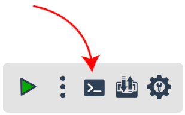
Спробуємо працювати і в цьому середовищі. Наберемо в редакторі один рядок і запустимо програму:123
Вікно консолі залишиться порожнім — результату не з'явиться.
Річ у тім, що число 123 саме по собі є лише значенням, а не вказівкою щось показати на екрані. У Python кожна дія (зокрема виведення результату) повинна бути записана як конкретна інструкція мовою програмування.
Спробуємо, скориставшись вже відомою нам інструкцією print() (англ. print — «друкуй»):
print(123)
🖥 Результат:
123
Отже, інструкція print() використовується для того, щоб щось «надрукувати» на екрані.
А якщо потрібно вивести не число, а текст? Спробуємо так:
print(hello)
🖥 Результат:
NameError: name 'hello' is not defined on line 1
Цього разу ми отримаємо повідомлення про помилку — Python не розуміє, що означає hello, оскільки такого слова немає серед назв інструкцій та змінних, які використовуються у програмі. Спробуємо взяти слово в лапки:
print("hello")
🖥 Результат:
hello
Цього разу Python не «скаржиться».
Щоразу, коли ми маємо справу з текстовими даними, потрібно брати їх у лапки — так ми повідомляємо Python, що це рядок символів, а не назва змінної чи інструкції. Рядок можна взяти як у подвійні "лапки", так і в одинарні 'лапки', головне — завершити рядок тим самим символом, яким його почато:
print('hello')
Результат виконання буде тим самим:
hello
А якщо в тексті є апостроф, наприклад слово «комп'ютер»? У такому разі рядок краще взяти в подвійні лапки, щоб апостроф не сплутати із символом, що завершує рядок:
print("комп'ютер")
🖥 Результат:
комп'ютер
Якщо ж усередині рядка потрібні саме лапки, можна скористатися протилежним типом лапок ззовні:
print('Він сказав: "Привіт!"')
🖥 Результат:
Він сказав: "Привіт!"
Спробуємо виконати кілька арифметичних дій. Ось скрипт із додаванням та множенням:
print(5 + 3)
print(5 * 3)
🖥 Результат:
8
15
Як бачимо, наш код виконується послідовно, починаючи згори і рухаючись донизу. У програмуванні є вказівки, які можуть змінювати порядок виконання інструкцій програми — з ними ми познайомимось пізніше.
Тепер віднімання та ділення:
print(5 - 3)
print(5 / 3)
🖥 Результат:
2
1.666666666666667
А як бути з дужками в арифметичних виразах? Без дужок множення виконується раніше додавання:
print(2 + 3 * 4)
🖥 Результат:
14
З дужками порядок дій можна змінити:
print((2 + 3) * 4)
🖥 Результат:
20
Можемо також піднести число до степеня, скориставшись ** (наприклад, 5² = 5 × 5 = 25):
print(5 ** 2)
🖥 Результат:
25
Ми можемо виконувати операції не тільки з числами, а й з рядками символів, але результат буде зовсім іншим. Спробуємо «додати» два рядки:
print("Привіт" + "Світ")
🖥 Результат:
ПривітСвіт
У цьому випадку «числові» знаки додавання застосовуються не до чисел, а до символів, тобто рядків, і вони не додаються в математичному сенсі, а поєднуються. Таке поєднання рядків у програмуванні називають конкатенацією. Результат вийшов трохи не таким, як очікувалося — слова «злиплися» без пробілу, тож додамо пропуск між ними:
print("Привіт" + " " + "Світ")
🖥 Результат:
Привіт Світ
А от «склеїти» рядок із числом за допомогою + не можна:
print("Число: " + 5)
🖥 Результат:
TypeError: cannot concatenate 'str' and 'int' objects on line 1
Ця команда призведе до помилки, оскільки Python не може автоматично поєднати текст і число символом +. Якщо потрібно вивести рядок і число разом, їх можна просто перелічити через кому — у такому разі пропуск між ними Python додає автоматично:
print("Число:", 5)
🖥 Результат:
Число: 5
Рядки, до того ж, можна «розмножувати» за допомогою знака *:
print("ha" * 3)
🖥 Результат:
hahaha
Порівняйте результат додавання чисел і рядків:
print(2 + 2)
print("2" + "2")
🖥 Результат:
4
22
В першому випадку Python додає числа за правилами арифметики, а в другому — з'єднує (конкатенує) рядки символів «2» та «2», отримуючи рядок «22», а не число.
Отже, інтерпретатор Python — це інтерактивна система, в якій ви можете вводити команди, які Python виконуватиме на ваших очах (у момент, коли ви підтвердите команду натисканням клавіші Enter).
Введені в консоль команди виконуються "тут і зараз". Якщо закрити вікно консолі або браузера, всі введені команди й створені змінні будуть назавжди стерті з пам'яті комп'ютера. Зберегти такий код у файл неможливо.
Існує багато інших інтерпретованих мов, наприклад JavaScript або R. Головна перевага цього типу мов полягає в тому, що можна негайно протестувати команду за допомогою інтерпретатора, що дуже корисно для налагодження (тобто пошуку та виправлення можливих помилок у програмі).
У реальному житті програми складаються з десятків, сотень або тисяч рядків коду. Вводити їх щоразу вручну в консоль неможливо. У режимі виконання програм ми спочатку записуємо весь текст програми у файл, зберігаємо його, а вже потім даємо інтерпретатору команду виконати весь цей пакет цілком.
Програма — це повний набір інструкцій (команд), збережений у вигляді файла, який комп'ютер може зчитувати та виконувати автономно для вирішення конкретної задачі.
Програма, написана мовою Python, також часто називається скриптом (від англійського script — сценарій). Ця назва підкреслює, що комп'ютер діє чітко "за сценарієм", рядок за рядком, без втручання користувача в процесі виконання кожного кроку.
Для написання програм використовують редактор коду. Це спеціалізований текстовий редактор (схожий на Блокнот, але значно розумніший). Середовища програмування — такі як вбудоване IDLE, навчальне ЄPython чи професійне PyCharm — мають такий редактор у своєму складі. Він підсвічує ключові слова Python різними кольорами, автоматично робить відступи та допомагає уникати помилок.
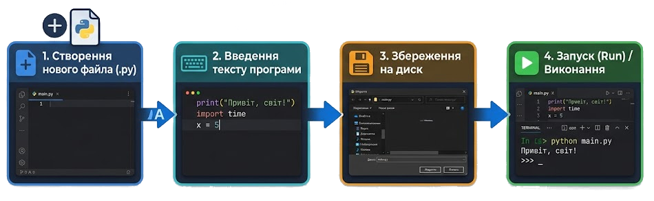
File -> New File (Файл -> Новий файл). Перед нами відкривається порожнє вікно редактора коду. У більшості середовищ програмування та редакторів коду новий файл створюється при завантаженні середовища, тож його не потрібно створювати окремо.print("--- Програма обчислення площі ---")
a = 5
b = 8
square = a * b
print("Площа прямокутника дорівнює:", square)
File -> Save (або натискаємо комбінацію клавіш Ctrl + S). Даємо файлу зрозумілу назву (наприклад, area.py).Важливо: Файли програм Python обов'язково повинні мати розширення
.pyнаприкінці назви — це вказує операційній системі, що всередині міститься код Python.
Деякі середовища програмування зберігають файл автоматично, навіть без втручання користувача.
Щоб запустити збережену програму на виконання, у вікні редактора коду достатньо натиснути клавішу F5 або обрати в верхньому меню пункт **Run -> Run Module** (у середовищі ЄPython для цього є велика кнопка з трикутником "Запуск").
Середовище автоматично передасть файл інтерпретатору. Після цього відкриється вікно консолі, де будуть показані результати виконання:
--- Програма обчислення площі ---
Площа прямокутника дорівнює: 40
Якщо під час написання коду було зроблено друкарську помилку (наприклад, написано prnt замість print), інтерпретатор зупинить роботу, підсвітить проблемне місце червоним кольором і виведе повідомлення про помилку (NameError або SyntaxError).
В такому разі ми:
Ctrl + S).F5).Одне з головних завдань створення скрипту — можливість запустити його на будь-якому комп'ютері, де встановлено Python, навіть якщо там взагалі немає середовищ розробки (на кшталт IDLE чи ЄPython).
Якщо під час встановлення Python на комп'ютер було увімкнено опцію асоціації файлів, операційна система знає, що файли з розширенням .py треба відкривати за допомогою інтерпретатора Python.
area.py у провіднику Windows або Finder на Mac і двічі клацнути на нього лівою кнопкою миші.input("Натисніть Enter для виходу...") — вона змусить програму зачекати на реакцію користувача.Це найнадійніший та професійний спосіб запуску готових скриптів.
Win + R, ввести cmd та натиснути Enter).python і через пробіл вказати повний шлях до скрипту: cmd python C:\Users\User\Documents\area.pycd.python3 та назву файлу:python3 area.py
Python — це інтерпретована мова, тобто кожен рядок коду зчитується, а потім інтерпретується для виконання комп'ютером.
Будь-яка програма — це набір інструкцій-вказівок, які комп'ютер виконує одну за одною, згори донизу, у тому порядку, в якому вони записані в коді. Це базовий, найпростіший спосіб виконання програми — його називають лінійним (послідовним) алгоритмом.
print("Крок 1: вітаємо користувача")
name = input("Введіть ваше ім'я: ")
print("Крок 2: обробляємо дані")
print(f"Привіт, {name}!")
print("Крок 3: завершуємо роботу")
Python виконає ці рядки строго по порядку: спочатку виведе перше повідомлення, потім запитає ім'я, потім виведе привітання і так далі. Жоден рядок не виконається раніше за попередній.
Іноді потрібно, щоб програма виконувала різні дії залежно від певної умови. Для цього використовується конструкція if / elif / else.
age = int(input("Введіть ваш вік: "))
if age >= 18:
print("Доступ дозволено")
elif age >= 13:
print("Потрібен дозвіл батьків")
else:
print("Доступ заборонено")
Тут порядок виконання змінюється залежно від значення змінної age:
age >= 18 істинна — виконається лише перший блок;elif);else.Тобто програма більше не йде «рядок за рядком» без винятків — вона обирає, який саме блок виконати, а решту блоків пропускає.
Щоб виконати один і той самий блок інструкцій кілька разів, використовують цикли — for та while (про цикли мова буде йти в наступних розділах).
Цикл for (відома кількість повторень)
for i in range(5):
print(i)
Блок всередині циклу виконається 5 разів (для значень i від 0 до 4).
Цикл while (повторення, доки виконується умова)
count = 0
while count < 3:
print("Виконую дію...")
count += 1
Тут блок повторюється, доки істинна умова count < 3. Як тільки умова стає хибною — цикл припиняється, і виконання програми продовжується з наступного рядка після циклу.
Виконання програми завершується в одному з трьох випадків:
Виконано всі вказівки програми Найпростіший і найпоширеніший випадок: інтерпретатор Python дійшов до останнього рядка коду, і виконувати більше нічого. Програма завершується успішно.
Надійшла вказівка про завершення роботи
Програма може завершитися достроково, якщо в коді явно викликано команду завершення, наприклад:
import sys
print("Починаємо роботу")
sys.exit() # негайне завершення програми
print("Цей рядок вже НЕ виконається")
або через exit(), quit(), або завершення функції main() через return.
Виникла помилка (виняток) Якщо під час виконання інтерпретатор зустрічає ситуацію, яку не може обробити (наприклад, ділення на нуль, звернення до неіснуючої змінної, некоректний тип даних), виконання аварійно переривається, і в консоль виводиться повідомлення про помилку.
numbers = [1, 2, 3]
print(numbers[5]) # індексу 5 не існує у списку з 3 елементів
Результат у консолі:
Traceback (most recent call last):
File "example.py", line 2, in <module>
print(numbers[5])
IndexError: list index out of range
У цьому повідомленні (яке називається traceback) Python вказує:
IndexError, ZeroDivisionError, NameError, TypeError;line 2);example.py).Таку помилку можна перехопити та обробити самостійно за допомогою конструкції try / except, щоб програма не завершувалася аварійно - про це буде йти мова надалі
Звичайно, інтерпретатор швидко виявляє свої обмеження, коли хочеться виконати більш складну послідовність інструкцій. Як і в будь-якій мові програмування, ці інструкції можна зберегти у файлі, який зазвичай називають скриптом (або програмою) Python.
У скрипті все, що йде після символу #, ігнорується Python до кінця рядка і вважається коментарем.
Коментарі повинні пояснювати ваш код людською мовою. Вони дозволяють нам записувати в програму повідомлення, які не будуть виконуватися комп'ютером, — наприклад, пояснення того, що робить певний рядок коду або чому обрано саме таке рішення. Ось приклад:
# Ваш перший коментар у Python.
print("Привіт, світ!")
# Далі можуть слідувати інші, більш корисні команди.
Символ # дозволяє прокоментувати лише один рядок. Якщо потрібно прокоментувати кілька рядків одразу, можна або поставити символ # на початку кожного з них, або взяти весь текст коментаря в потрійні лапки (''' або """):
# Перший рядок коментаря.
# Другий рядок коментаря.
"""
Це також коментар,
який може займати
кілька рядків.
"""
print("Привіт, світ!")
Символ
#часто помилково називають «дієз». Насправді це «решітка» (або «хеш»).
У програмуванні часто потрібно повторювати певні дії (за допомогою циклів) або виконувати кілька інструкцій, якщо умова є істинною (за допомогою перевірок).
Наприклад, уявімо, що ми хочемо вивести на екран кожну букву слова «ПІТОН», порахувати їх, а потім вивести загальну кількість букв у кінці. Алгоритм у псевдокоді виглядав би так:
для кожної букви в слові "ПІТОН":
вивести букву
збільшити рахунок букв на одну
вивести загальну кількість букв
Для кожної букви ми хочемо виконати дві дії: спочатку вивести букву, а потім збільшити рахунок. Щоб вказати це, ці дві інструкції зміщені вправо відносно рядка з циклом («для кожної букви»). Це зміщення називається відступом (індентацією), а сукупність рядків з однаковим відступом становить блок інструкцій.
Після того, як ці дві дії виконано для кожної букви, ми переходимо до наступного кроку — виведення загальної кількості букв. Щоб чітко вказати, що це відбувається вже після завершення циклу, відповідний рядок не має відступу.
На практиці відступи в Python повинні бути однорідними (або лише пробіли, або лише табуляції, але не їх суміш). Відступ у 4 пробіли є рекомендованим стилем.
Якщо все це здається трохи складним, не хвилюйтеся. Ви зрозумієте всі ці деталі крок за кроком, розділ за розділом.
print у Python, System.out.println у Java, console.log у JavaScript). З'ясуйте, як записується виведення даних принаймні у трьох різних мовах програмування.print("Привіт, світ!").Щоб доповнити вивчення Python, не вагайтеся звертатися до інших ресурсів: Українською мовою:
Англійською мовою:
pip.